library(tidyverse)4 Data visualisation with ggplot2
For this part we use the FalseBeginners dataset. The dataset is based on De Wilde et al. (2019), which is available via: https://osf.io/ndr47/. I have selected and renamed the variables for our purposes here. Table 4.1 provides an overview of the variables.
| ID | Variable | Description |
|---|---|---|
| 1 | Student | A unique identifier for each student |
| 2 | School | A unique identifier for each school |
| 3 | Class | A unique identifier for each class |
| 4 | PPVT | Score for the Peabody Picture Vocabulary Test (PPVT). Maximum score = 120 |
| 5 | Speaking | Score for the speaking test. Maximum score = 20 |
| 6 | Listening | Score for the listening test. Maximum score = 25 |
| 7 | ReadingWriting | Score for the reading and writing tests. Maximum score = 50 |
| 8 | Attitude | Attitude of student towards English: Positive vs. Negative |
| 9 | L1 | L1: Dutch vs. Multilingual |
| 10 | Sex | Sex of student: Male vs. Female |
The file is a tab delimited .txt-file. We open the file with read.delim(). The dataset is organised in long data format.
- 1
- the text file to open,
- 2
- the first row of the file contains the variables names,
- 3
- missing values are marked as “NA”,
- 4
- strings are interpreted as factors.
As always, we start with a global summary.
options(width = 70)
summary(fb) Student School Class PPVT
Min. : 2.0 S12 : 51 9A : 29 Min. : 31.0
1st Qu.:219.8 S34 : 49 12A : 27 1st Qu.: 69.0
Median :445.5 S33 : 37 11A : 24 Median : 78.0
Mean :441.1 S38 : 36 12B : 24 Mean : 78.6
3rd Qu.:660.2 S51 : 36 42A : 24 3rd Qu.: 88.0
Max. :867.0 S8 : 35 21A : 21 Max. :116.0
(Other):536 (Other):631 NA's :1
Speaking Listening ReadingWriting Attitude
Min. : 0.000 Min. : 0.00 Min. : 0.00 negative: 27
1st Qu.: 2.000 1st Qu.:10.00 1st Qu.:13.00 positive:733
Median : 5.000 Median :15.00 Median :18.00 NA's : 20
Mean : 6.786 Mean :14.95 Mean :21.16
3rd Qu.:10.000 3rd Qu.:20.00 3rd Qu.:29.00
Max. :20.000 Max. :25.00 Max. :50.00
NA's :13 NA's :2 NA's :1
L1 Sex
dutch:567 female:378
multi:207 male :402
NA's : 6
We omit all rows with NAs (this means that a row is dropped as soon as it contains one missing value).
fb <- na.omit(fb)4.1 Histogram
Figure 4.1 shows a histogram for the vocabulary score PPVT.
- 1
-
the dataset that we wish to use. Remember that you need to open this data first. In other words, if the dataframe
fbdoes not exist, this code won’t work, - 2
-
mapping &
aesindicates the variables for the x- and y-axis (and perhaps other variables for other aesthetics), - 3
- geom is the kind of visualisation that we wish to use.
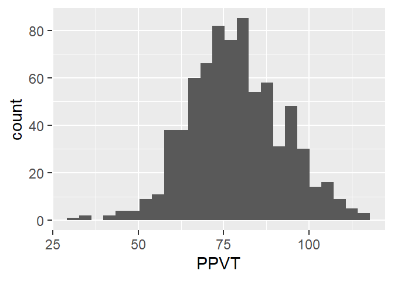
The key idea in all ggplot figures is to start from a dataframe or tibble object, choose the variables for the x- and y-axis, and choose a geom, the kind of figure for the visualisation.
Extending the basic code with aesthetic features is quite straightforward. In Figure 4.2, we add some color, a label for the x-axis and use a minimalistic theme.
- 1
- the data,
- 2
- the variable that we wish to visualise,
- 3
- the visualisation method,
- 4
- with a colour,
- 5
- a general theme (there are many others available to accomodate everyone’s taste),
- 6
- a better label for the x-axis.
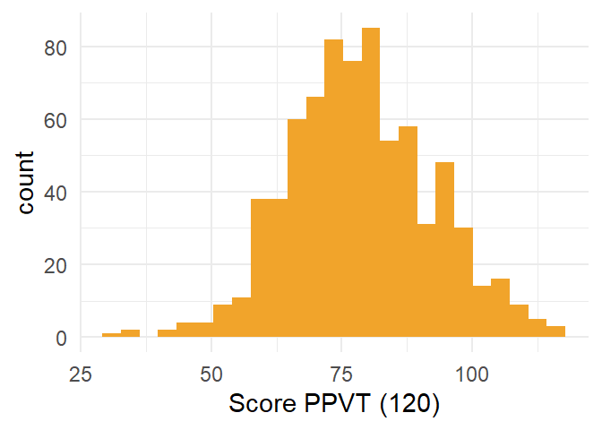
4.2 Boxplot
The code for the boxplot in Figure 4.3 is very similar to that of the histogram. The only things that we have to change is the use of the y-axis rather than the x-axis and the geom.
- 1
- the data,
- 2
- the variable for the y-axis (one could also create a horizontal boxplot on the x-axis),
- 3
- use a boxplot,
- 4
- change the x-axis for a nicer appearance,
- 5
- use a grey theme.
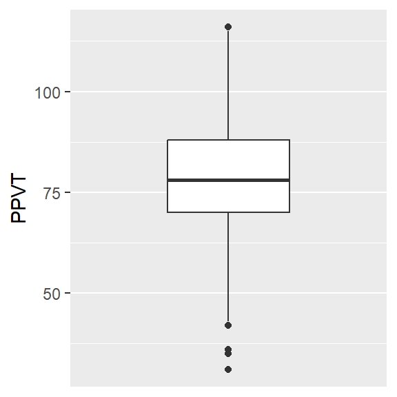
4.3 Density curve
We change change the geom and we get the density plot in Figure 4.4.
ggplot(fb, aes(x = PPVT)) +
geom_density() +
theme_minimal()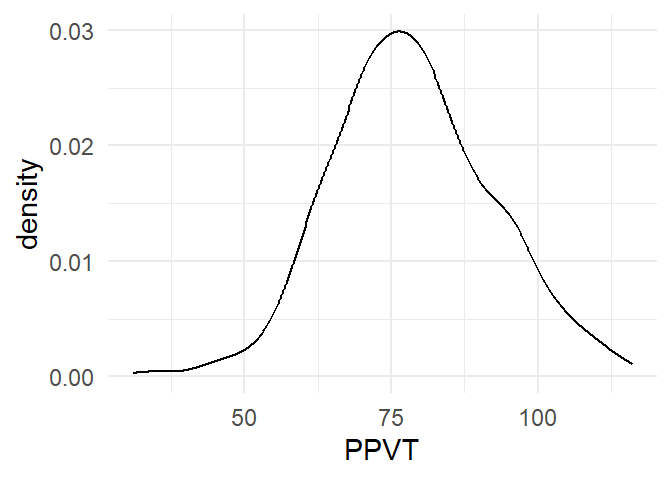
4.4 Barplot
Before we can create a barplot we need to tabulate the data, which we can do with count(). Then we select the categorical variable levels on the x-axis and their respective counts on the y-axis, and we get Figure 4.5.
- 1
-
start with
fb, - 2
-
count the observations for each level of
Sex, - 3
-
use ggplot, put
Sexon the x-axis andn(the result ofcount()) on the y-axis, - 4
- visualise with a barplot (“col” = column).
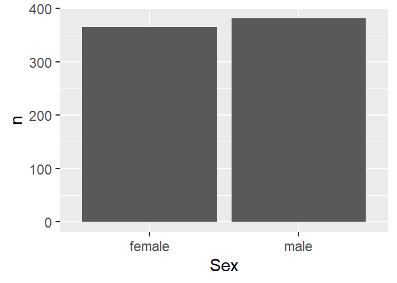
We can again add some aesthetics to get Figure 4.6
fb |>
count(Sex) |>
ggplot(aes(x = Sex,
y = n)) +
geom_col(fill = "#1E64C8") +
xlab("Sex") +
theme_minimal() 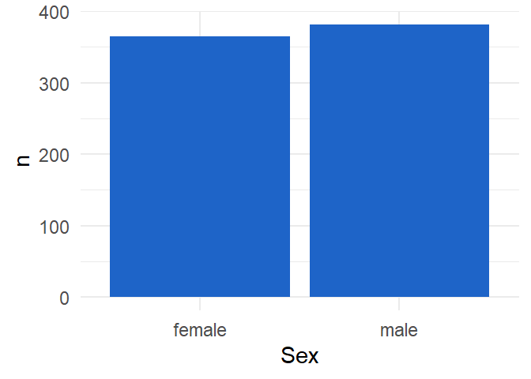
4.5 Overlapping histograms
So far, we have only looked at univariate visualisations. Let’s add an extra dimension. We add Sex as a categorical variable by means of two different colours, as in Figure 4.7. The alpha argument argument adds transparency to the colours. Note that we use “fill” rather than “colour”, because the latter adds colour to the border of the histogram.
ggplot(fb,
aes(x=PPVT,
fill = Sex)) +
geom_histogram(bins = 20,
position = "identity",
alpha = 0.4) +
theme_classic()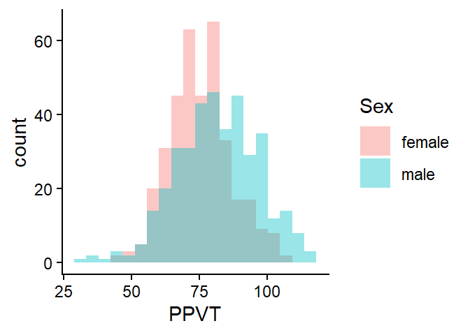
4.6 Overlapping density plots
Figure 4.8 shows two overlapping density plots. The code is similar except to the one for the overlapping histograms except for the geom.
ggplot(fb,
aes(x=PPVT,
fill = Sex)) +
geom_density(position = "identity",
alpha = 0.4) +
theme_classic() 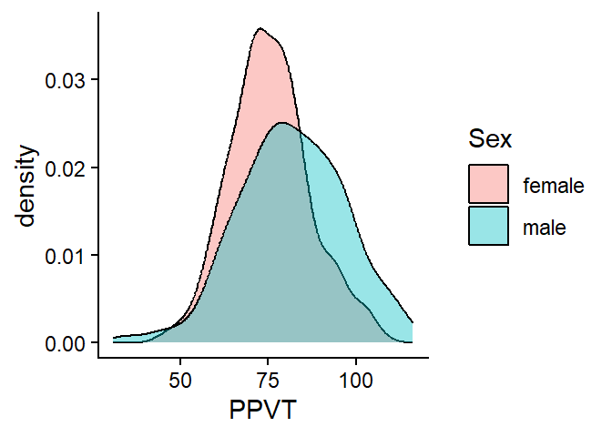
4.7 Multiple boxplots
A clustered boxplot, as in Figure 4.9, is created by adding an extra categorical variable on the x-axis. Here we added some extra colour with the fill argument.
ggplot(fb, aes(x = Sex,
y = PPVT,
fill = Sex)) +
geom_boxplot() +
theme_minimal() +
1 theme(legend.position = "none")- 1
- A legend is created by default for the colours, but this is redundant because of the labels on the x-axis.
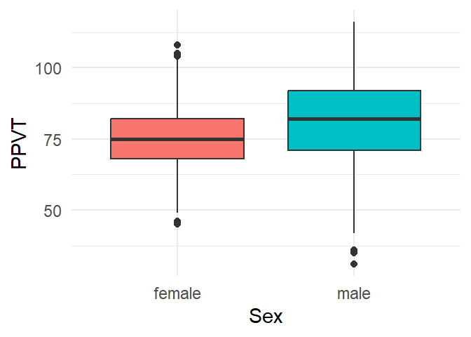
4.8 Boxplots with a facet
Figure 4.10 visualises three variables: the continuous variable PPVT by both Sex and L1. L1 is here added as a facet.
ggplot(fb, aes(x = Sex,
y = PPVT,
fill = Sex)) +
geom_boxplot() +
theme_minimal() +
facet_wrap(L1 ~ .) +
theme_minimal() +
theme(legend.position = "none") 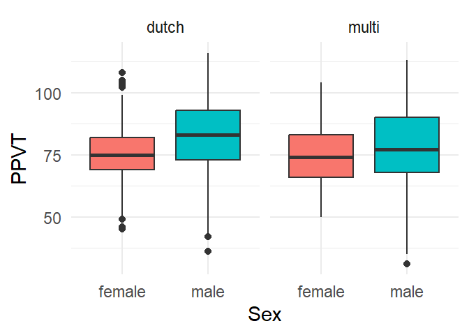
Figure 4.11 replaces L1 by School, which conveniently allows us to compare the Sex-differences over the different schools.
ggplot(fb, aes(x = Sex,
y = PPVT,
fill = Sex)) +
geom_boxplot() +
theme_minimal() +
facet_wrap( ~ School) +
theme_minimal() +
theme(legend.position = "none") 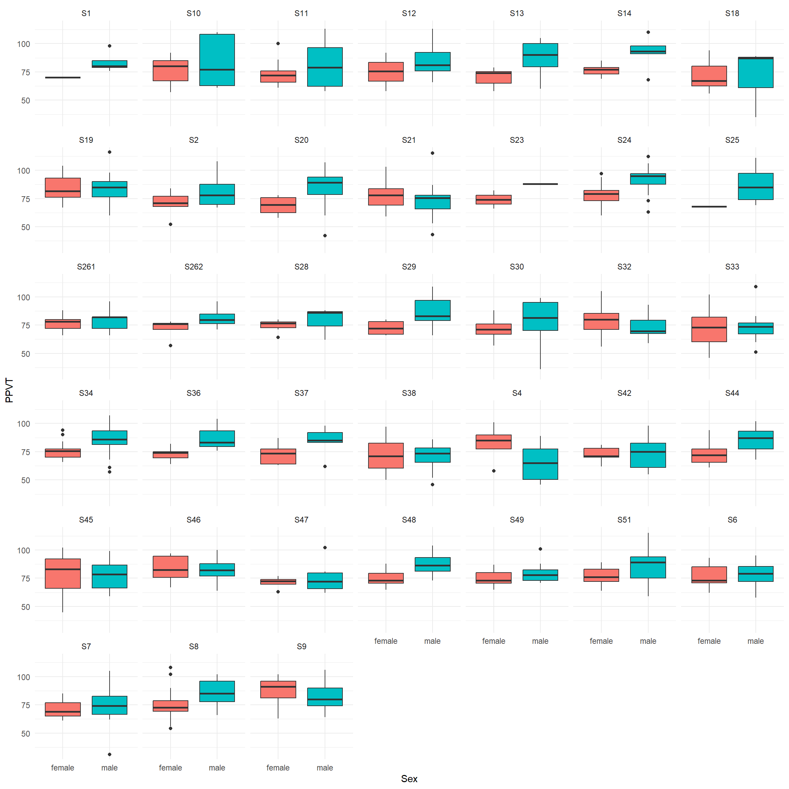
The plots suggest that in most schools boys tend to have a higher PPVT than girls.
4.9 Clustered barplot
Is there an association between Sex and Attitude? We can examine the association between two categorical variables by means of clustered barplots, for which we first need to aggregate the data.
sa <- fb |> count(Sex, Attitude)
sa Sex Attitude n
1 female negative 13
2 female positive 352
3 male negative 13
4 male positive 368Then we can use the dataframe to create the barplot in Figure 4.12.
ggplot(data=sa, aes(x=Sex,
y=n,
fill=Attitude)) +
geom_col(position = "dodge") +
theme_minimal()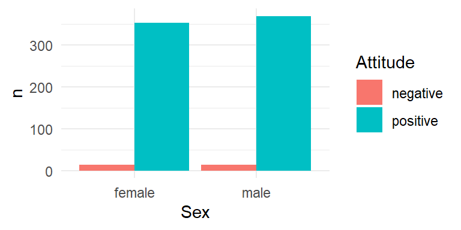
We can aggregate the attitudes for both Sexes by School and add a facet for School to the clustered barplot, as in Figure 4.13
ssa <- fb |> group_by(School, Sex) |> count(Attitude)
ggplot(data=ssa, aes(x=Sex,
y=n,
fill=Attitude)) +
geom_col(position = "dodge") +
facet_wrap( ~ School) +
theme_minimal()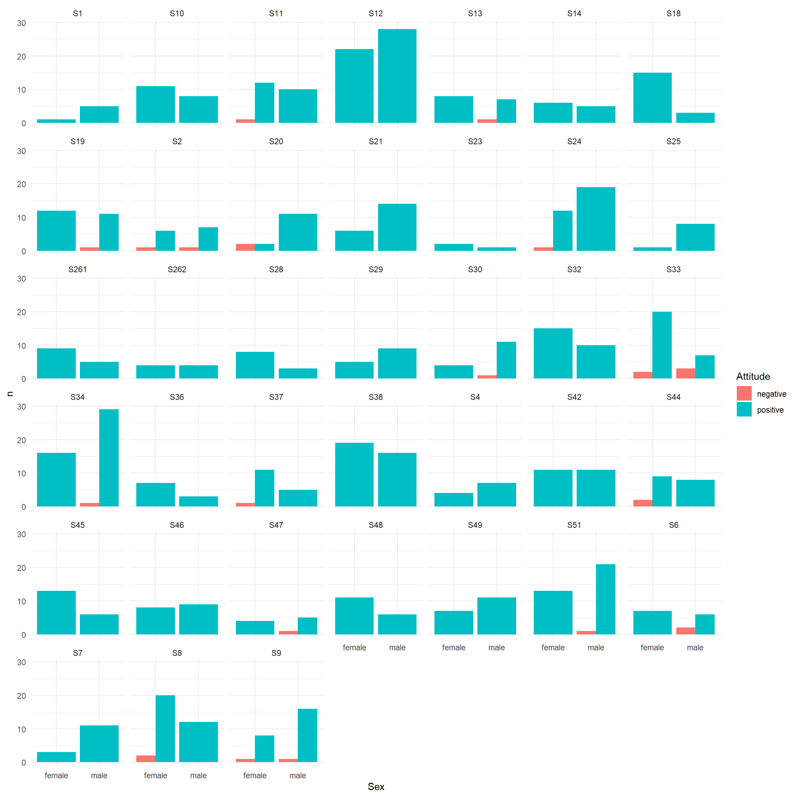
Overall, both sexes show a very positive attitude towards English.
4.10 Scatterplot
The scatterplot in Figure 4.14 visualises the relation between the scores for PPVT and Speaking.
ggplot(fb, aes(x = PPVT,
y = Speaking)) +
geom_point() +
theme_minimal()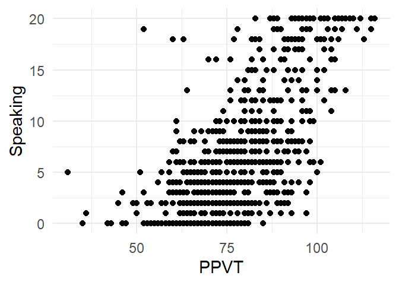
We can add a regressionline with geom_smooth() as in Figure 4.15.
ggplot(fb, aes(x = PPVT,
y = Speaking)) +
geom_point() +
geom_smooth(method = "lm", col="blue") +
theme_minimal()`geom_smooth()` using formula = 'y ~ x'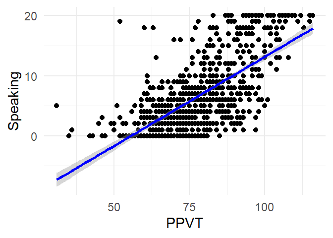
Or with a non-parametric smoother, as in Figure 4.16.
ggplot(fb, aes(x = PPVT,
y = Speaking)) +
geom_point() +
geom_smooth(method = "loess", col="blue") +
theme_minimal()`geom_smooth()` using formula = 'y ~ x'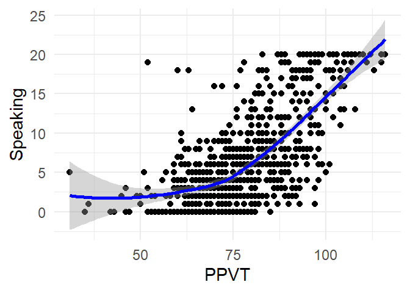
And again, it’s straightforward to add extra variables a facet, as in Figure 4.17:
ggplot(fb, aes(x = PPVT,
y = Speaking)) +
geom_point() +
geom_smooth(method = "loess", col="blue") +
facet_grid(Sex ~ L1) +
theme_minimal()`geom_smooth()` using formula = 'y ~ x'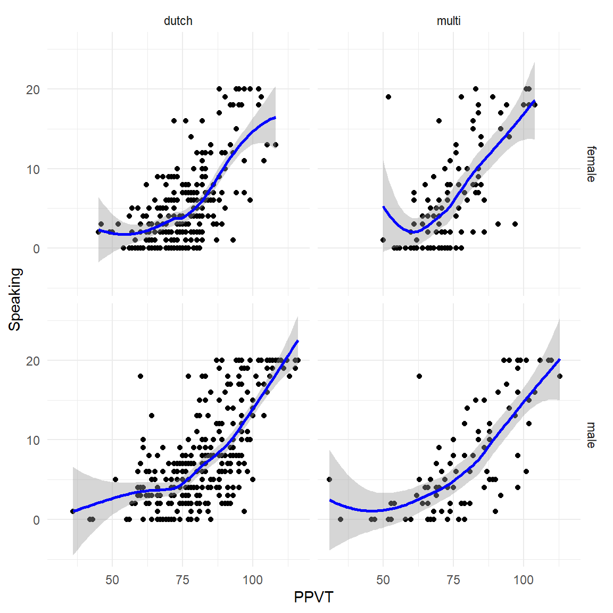
4.11 Exercises
Exercise 4.1
Use the ggplot2 package to create the following visualisations for the Multitask dataset:
- Create a histogram of
Time - Create a boxplot of
Time - Create a barplot of
Location
Exercise 4.2
Use the ggplot2 package to create the following visualisations for the Multitask dataset:
- Visualise
TimebyTaskas a clustered boxplot - Visualise
TimebyTaskand University as overlapping density plots - Add a vertical line to visualize the mean
Timefor both Tasks. - Use
ggplot()to visualise the paired differences in the multitask dataset - Create a new variable
Difference, based on the difference inTimebetween the two Tasks. - Visualise the relation between
SpeakingandListening. - Visualise the relation between
SpeakingandListeningfor both Sexes and L1s separately.